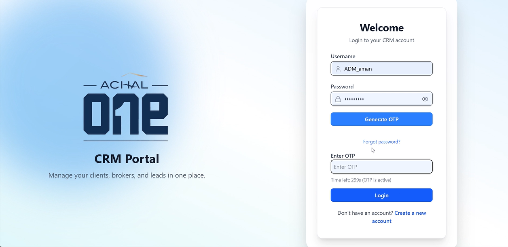
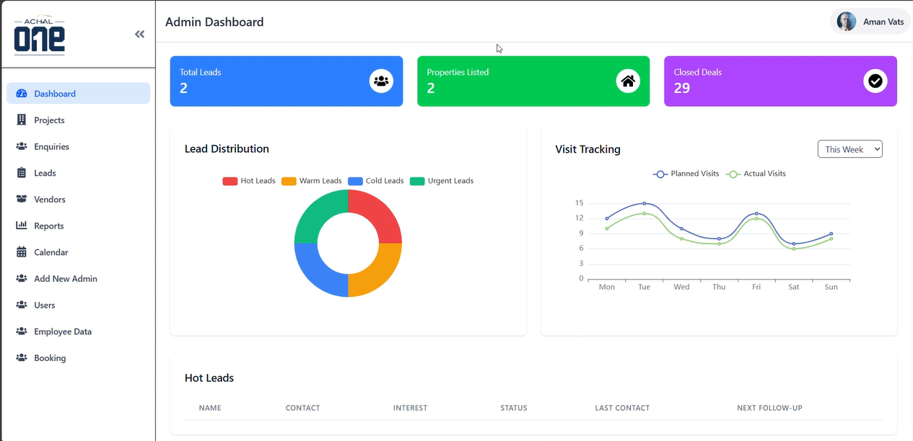
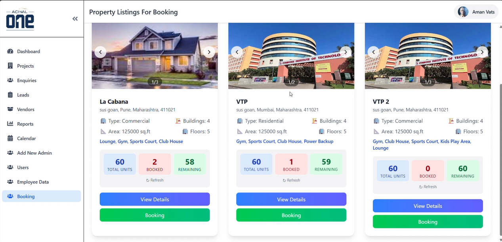
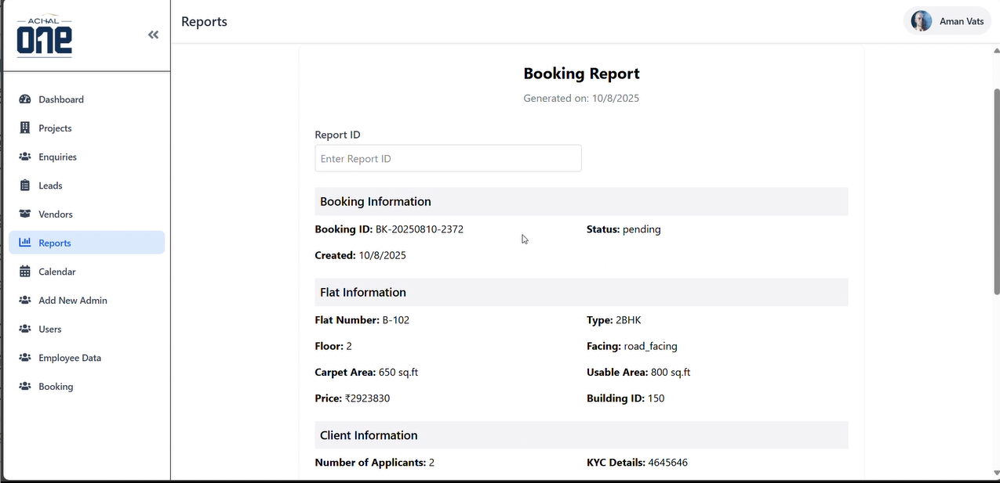
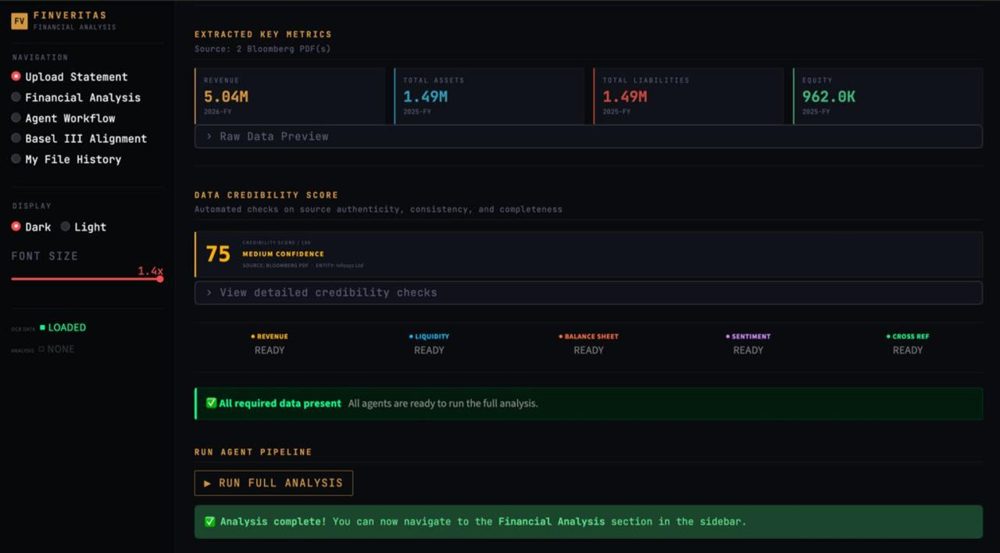
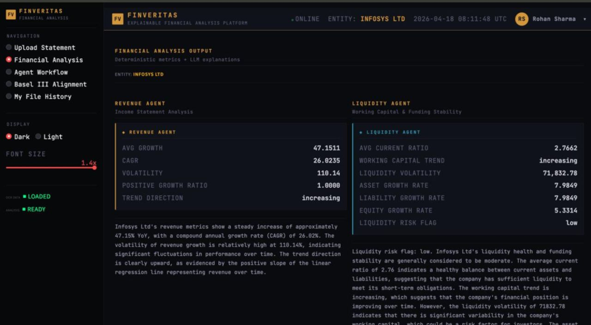
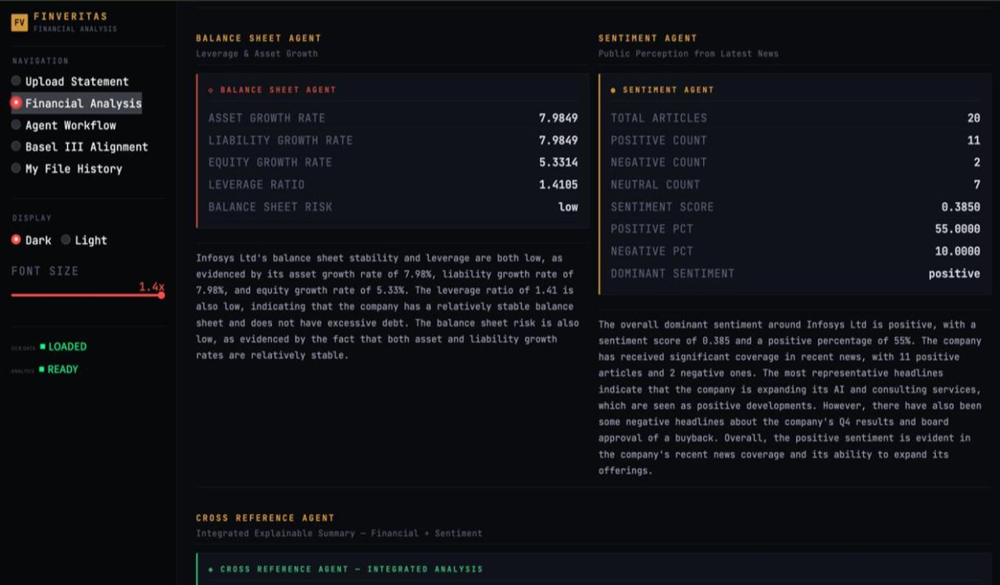
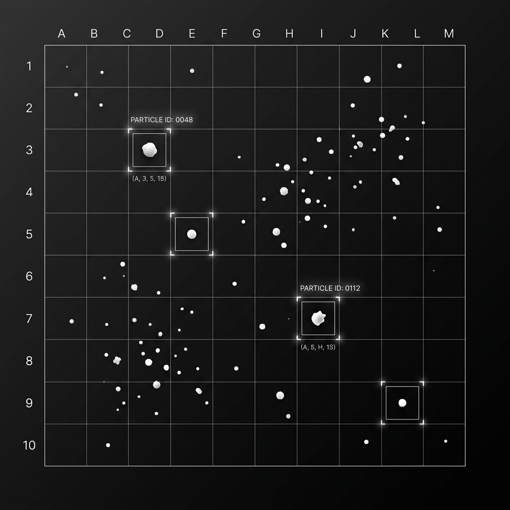
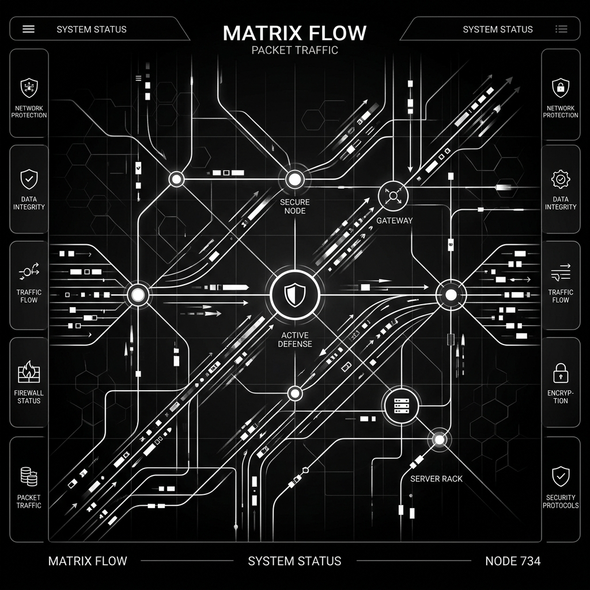
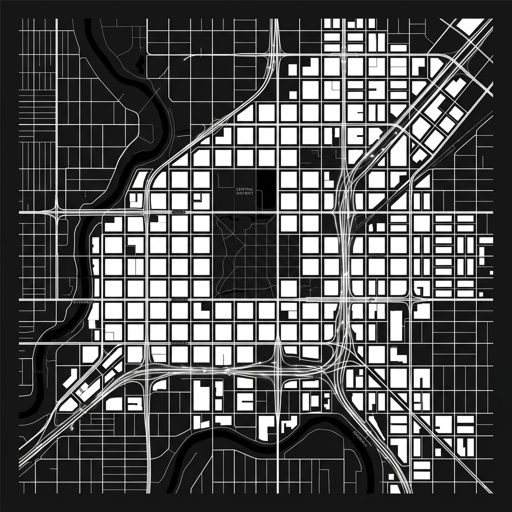

About Me
02 / 11I am a results-driven Computer Science Engineering student with hands-on experience as a Full-Stack Developer in production and cloud environments.
My passion lies at the intersection of AI and cloud architecture. I have a proven track record in building multi-agent LLM systems, deep learning pipelines, and highly scalable web applications.
Recognized with the 1st Rank at the Industry Conclave 2026 and as a published researcher in Generative AI, I leverage strong foundational knowledge in cloud infrastructure, virtualization, and enterprise-level software architecture to deliver high-impact solutions.
Technical Summary
03 / 11Languages & Core
Web & Cloud Infrastructure
AI / Machine Learning
Developer Tools & Systems
Work Experience
04 / 11Software Development Intern
- Cloud Infrastructure: Engineered and maintained a scalable cloud infrastructure on AWS EC2 using Elastic Load Balancing (ELB) and Auto Scaling Groups (ASG), supporting 20,000+ active users with 99% service availability.
- Security & Integration: Configured IAM roles, security groups, and secrets via AWS Parameter Store using a least-privilege model to integrate Twilio, Cloudinary, Nodemailer, and Google Sheets.
- Real-time Systems: Engineered a live scheduling module on EC2 using WebSockets (Socket.IO) handling 5,000+ concurrent appointments, reducing scheduling conflicts by 60% with sub-20ms latency.




Technical Projects
05 / 11Financial Review System
Explainable background review pipeline using multi-agent LLMs (LangGraph) and RAG.
Microplastic Detection
Deep learning computer vision pipeline with YOLOv8/v9, TensorRT, and synthetic GAN augmentation.
Network IDS CNN
Intrusion Detection System leveraging 1D-to-2D feature matrix transformation and convolutional layers.
ISKCON Memorial
Full-stack digital preservation platform with a 3-tier moderation workflow and CDN acceleration.
Project 01
06 / 11Explainable Financial Background Review System
Multi-Agent LLM System, RAG & LangGraph
- Architected a multi-agent LLM system consisting of 7 specialized financial agents using LangGraph; deployed on AWS EC2 (t3.medium) achieving ~97% uptime.
- Automated an ingestion pipeline to extract 50+ financial metrics (CAGR, volatility, growth ratios) from Bloomberg PDFs of Fortune 500 companies with an average parse-to-output latency of ~3.2s.
- Achieved a 1.00 correctness score and a P95 response time under 2.8s across 12 concurrent analyst sessions, securing 1st Rank at the PBL-2 Industry Conclave 2026 (SIT Pune).



Project 02
07 / 11Microplastic Detection Pipeline
Computer Vision & Generative Data Augmentation
- Developed an object detection model to classify 5 microplastic categories, achieving 92.7% mAP@0.5 and outperforming ResNet/YOLOv8 baselines.
- Curated and augmented a dataset of 1,900+ annotated environmental images using Generative Adversarial Networks (GANs) to enhance model robustness for small particle detection (~50µm).
- Conducted research in collaboration with the Symbiosis Centre for Waste Resource Management (SCWRM), Pune, deploying a Streamlit control dashboard optimized with TensorRT.

Project 03
08 / 11Intrusion Detection System (IDS)
Deep Learning CNN with 1D-to-2D Matrix Transformation
- Built a multi-class Intrusion Detection System using a CNN on the CICIDS2017 dataset (500,000+ records), featuring a novel 1D-to-2D feature transformation that reshapes network flow data into 9×9 grayscale image matrices for spatial pattern learning.
- Designed and evaluated a Sequential CNN (dual Conv2D layers, MaxPooling, Dropout) compiled with the Adam optimizer, achieving 95%+ accuracy across all 12 network attack classes.
- Assessed performance metrics via comprehensive classification reports, confusion matrices, ROC curves, and Area Under the Curve (AUC) scores.

Project 04
09 / 11ISKCON Devotee Memorial Platform
Full-Stack Devotee Preservation & Moderation Platform
- Led development of a full-stack platform to digitally preserve and honor ISKCON devotees - React.js, Node.js, Express.js, and MongoDB - shipping 10+ production REST APIs with secure JWT authentication and a 3-tier moderation workflow for 100+ active users.
- Built a scalable CRUD-based system featuring advanced search and filtering by location, role, and devotional identity, improving user discoverability.
- Achieved a 90+ Google PageSpeed score by leveraging Cloudinary CDN and dynamic lazy-loading, reliably handling 500+ devotee image uploads.
Research & Publications
10 / 11Generative Adversarial Networks in Urban Digital Twins
- Designed a Conditional WGAN-GP (Wasserstein GAN with Gradient Penalty) for synthetic urban mobility generation, outperforming VAE baselines by 7+ orders of magnitude with a 9.78×10⁻⁷ KL Divergence.
- Reduced spatial disparity from 29.6 to 20.5 (31%) using GAN-driven data augmentation, improving model fairness.
- Preserved 90% policy consistency, validated by a Spearman rank correlation of 0.90 between real and synthetic data distributions.
